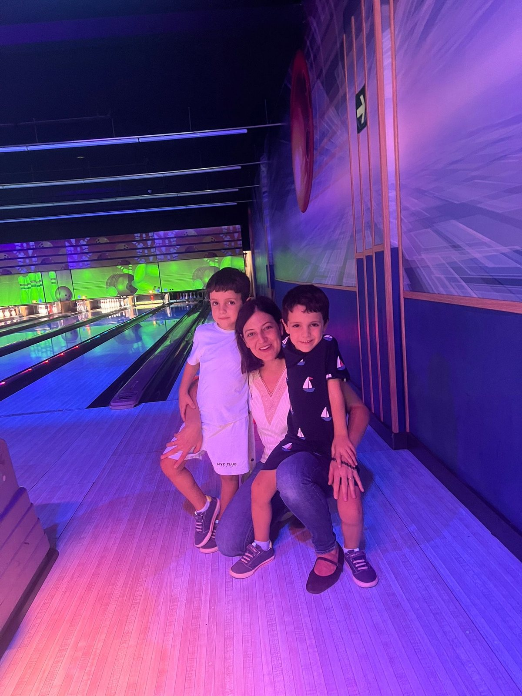
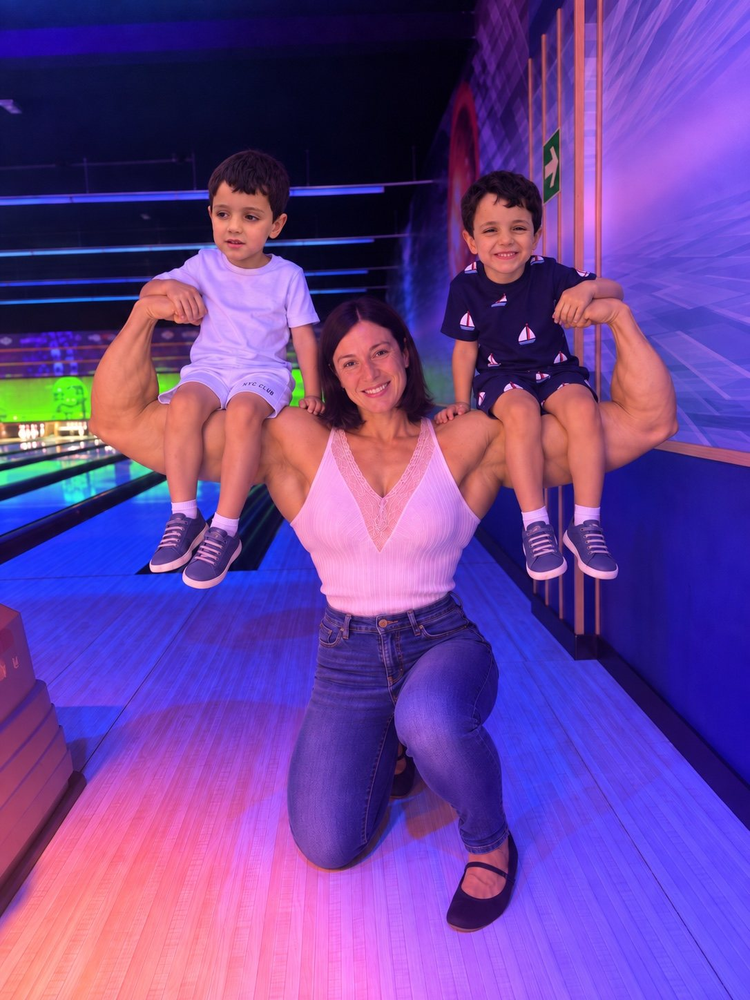

Alicia Debilucha

Proyecto madre coraje
Alicia Fortachona
Entre gritos, juguetes y supervivencia: nace Alicia Fortachona.
Entrenos en casa · dieta práctica · progreso sin dramas
Transformación desbloqueada
Has cruzado la puerta.
Ya no eres Alicia.
Eres ALICIA FORTACHONA.

Alicia Fortachona
“El drama sigue. Pero ahora con bíceps.”
Alicia Fortachona
Hoy
Modo Fortachona activo
Hoy se sobrevive entrenando
Pablo no recoge los juguetes. Tú sí recoges repeticiones.
Plan de la semana
3 días. Ni uno más por postureo.
Menú
Comer normal, pero con intención
Diástasis: regla de oro
Exhala en el esfuerzo. Si aparece abombamiento/coning, dolor o presión pélvica, reduce la dificultad o detén el ejercicio.
Fase 1
Entreno en casa · sin material
Objetivo semanal: 3 sesiones de 25–35 min.
Fase 2
Alicia contra las bandas
Se desbloquea cuando ya tenga bandas elásticas.
Seguridad con la diástasis
Prioriza movimientos lentos y controlados. Evita contener la respiración. Si un ejercicio produce un abombamiento marcado de la línea media, baja el rango, cambia la variante o detente.
Si hay dolor, bulto compatible con hernia, síntomas de suelo pélvico o dudas sobre la gravedad de la diástasis, conviene valoración por fisioterapia de suelo pélvico o un profesional sanitario.
Mantenimiento estimado—kcal/día
Objetivo inicial—kcal/día
Falta completar edad y actividad en Ajustes para calcular una estimación.
Estructura
3 comidas + 1 merienda opcional
Las calorías son una estimación, no una prescripción. Ajusta según evolución, hambre, rendimiento y consejo profesional.
Menú automático
Hoy no pienso pensar qué cocinar
Recetas Fortachona
Con la compra de Alicia
Calorías y macros aproximados por ración.
67,7 kg→59,2 kg
0% completado · 8,5 kg por recorrer
El objetivo es editable. La foto “Fortachona” es humor, no una promesa corporal.Peso semanal
Miramos tendencia, no dramas
Logros
Pequeñas victorias
Perfil
Datos de Alicia
Datos
Todo se guarda en este dispositivo
No hay cuenta ni servidor en esta versión. Si borras los datos del navegador, se pierde el progreso salvo que hayas exportado una copia.
Instalar en el móvil
iPhone/iPad: abre la web en Safari → Compartir → “Añadir a pantalla de inicio”.
Android/Chrome: usa el botón “Instalar” si aparece o el menú del navegador → “Instalar aplicación”.
Fuentes y aviso
La app es de entretenimiento y apoyo de hábitos; no sustituye evaluación médica, nutricional ni fisioterapéutica.